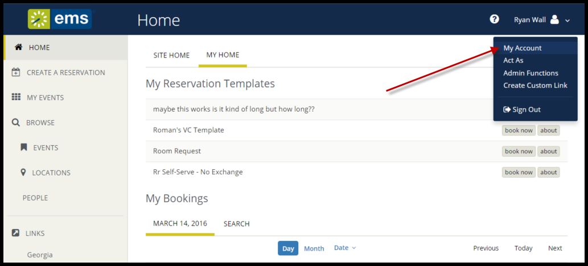
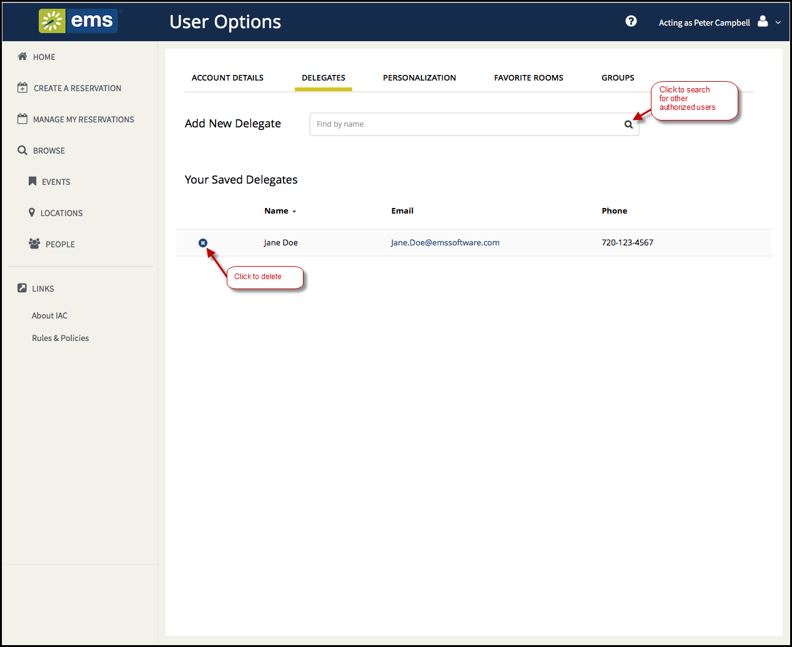
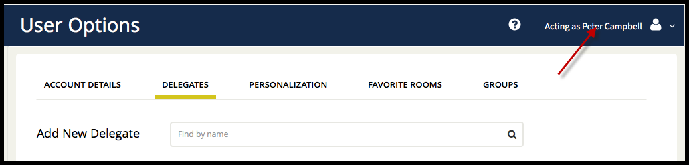

You may wish to designate another {{product_webapp}} user to make reservations and room requests and so forth on your behalf. You may need to to do this, for example, to get someone else to handle your EMS work during your absence.
You begin by adding one or more EMS users to act as your delegate. Then they can log in and request to "Act As" you. You can keep track of their actions on your behalf, and any event invitations, cancelations, changes, room requests, service requests, and so on that they create on your behalf will appear to other EMS users as yours.
C



Once activated, the user you are acting as will show in the upper right corner of the {{product_webapp}}, like this:
